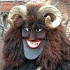

|
|
| |
LAGE: Kleinstadt mit
19.000 Einwohnern an der südlichen Grenze zu Serbien, wo die
Donau Ungarn verlässt.
Die
Stadt ist bekannt durch ein trauriges Ereignis in
der ungarischen Geschichte, als am 29. August 1526 eine vom
polnisch-ungarischen König Ludwig II.
geführte Schlacht gegen
die Türken verloren ging. In dieser Schlacht fanden insgesamt
20.000
ungarische Soldaten und auch der König den Tod. Die Folge war
eine 150 Jahre dauernde Besatzung, Plünderung und komplette
Ausrottung der Bevölkerung in vielen Ortschaften, nachzulesen in den Dokumenten
zahlreicher Ortschaften, wie z.B. in
, u.a.
|
|
Historische
Sehenswürdigkeiten in Mohács:
|
-
Zur
400 jährigen Jahresfeier wurde am Széchenyi Platz
die
Schlachtfeld-Denkmalkirche im byzantinischen Stil erbaut.
-
Im Museum
"Kanizsai Dorottya" (Szerb Str. 2.) wird die Geschichte der
Stadt und der 1526 verlorene Mohácser Schlacht
dargestellt.
- Eine Gedenkstätte am
sog. Török- bzw
Türken-Hügel erinnert an die 1526 verlorene
Schlacht. Die bisher aufgedeckten Massengräber am einstigen
Schlachtfeld erinnnern auf die erschütternden Ereignisse von
damals.
|
„BUSÓJÁRÁS”
= FASCHINGFEST
....findet
Mitte Februar alljährlich,
ca. eine Woche lang in Mohács statt
Der
Legende nach zogen die Einwohner von Mohács mit Tierfellen
verhüllt und furchterregende Tiermasken
tragend durch die Stadt, dabei erzeugten sie
mit ihren Ratschen einen ohrenbetäubenden Lärm. So
vertrieben sie die
Türken. Heute ist
der Busó-Umzug ein fester Bestandteil des hiesigen
Faschings.
Dabei wird der Winter beerdigt und der Frühling
begrüßt. |
 |
Inwiefern
die Legende eine Nachahmung des
schwäbisch-alemannischen Fastnacht-Umzuges ist,
lässt sich
nicht leicht beurteilen. Die Gegend um
Mohács war
nach
der Vertreibung
der Türken im 17. Jahrhundert weitgehend menschenleer und erst
im
18. Jahrhundert vorwiegend aus dem Schwabenland besiedelt. Die
gleichen Fastnacht-Feierlichkeiten waren damals schon eine
lange Tradition
in der alten Heimat der
Neuankömmlinge, von Bayern über Vorarlberg bis in die
Schweiz
und den Elsass. Die Masken aus Holz und die über Generationen
weitergereichten Kostüme haben identisches Aussehen.
Auch die
als "Legende" beschriebenen Traditionen der mittelalterlichen und
frühneuzeitlichen Fastnacht weisen gleiche Züge auf.
Den
wichtigsten Hinweis auf die schwäbische Tradition liefert
gerade
der
erste schriftliche Nachweis über diese Tradition aus dem Jahr
1783.
Damals waren die Donauschwaben schon massenhaft angesiedelt
und
sie stammen eben aus der Gegend mit der Fastnacht-Tradition. In Ungarn
wird diese Tradition fälschlicherweise auf
"Schokátz"-Ursprung
zurückgeführt. Die Schokatzen
waren ein slawisches Volk, das vor rd. zweihundert Jahren in das
serbische
Volk einschmolz, sie waren jedoch nie ansässig in
Mohács. Ein weiterer Hinweis auf den
schwäbisch-alemannischen Ursprung dieser Volkssitte ist, dass
die heute serbischen
Gebiete, wo "Busójárás" bekannt ist,
weitgehend
identisch ist mit dem
Siedlungsgebiet der Donauschwaben, wo 1783 die Serben noch lange nicht
heimisch waren. Südlich von Belgrad, wo
sich Serbien bis vor 1920 auf der Landkarte befand, gab es
noch vor kurzem überhaupt keinen Fastnacht-Umzug!
In der letzten Zeit kommen laufend
neue Vertreter weit entfernter Gemeinden aus Polen und Tschechien, aber
auch aus
anderen Städten in Ungarn (zuletzt aus Szentes) nach
Mohács, die
diese Fastnacht-Tradition in ihren Gemeinden nachmachen wollen. Kommerz
kennt eben keine Grenzen vor Geschichtsfälschung...
Genaueres über die Veranstaltung Busójárás erfahren Sie in unserem
Veranstaltungskalender im Monat
|
| |
|
Ungarn-Tourist Team

|
| |
| |
|